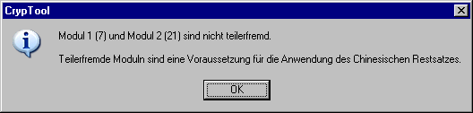
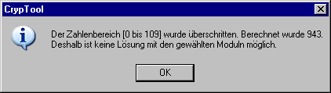
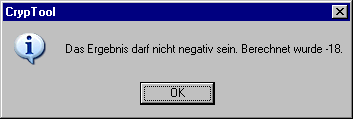
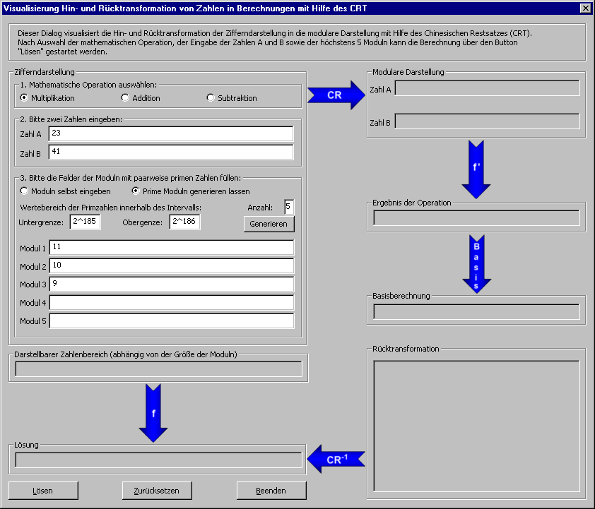
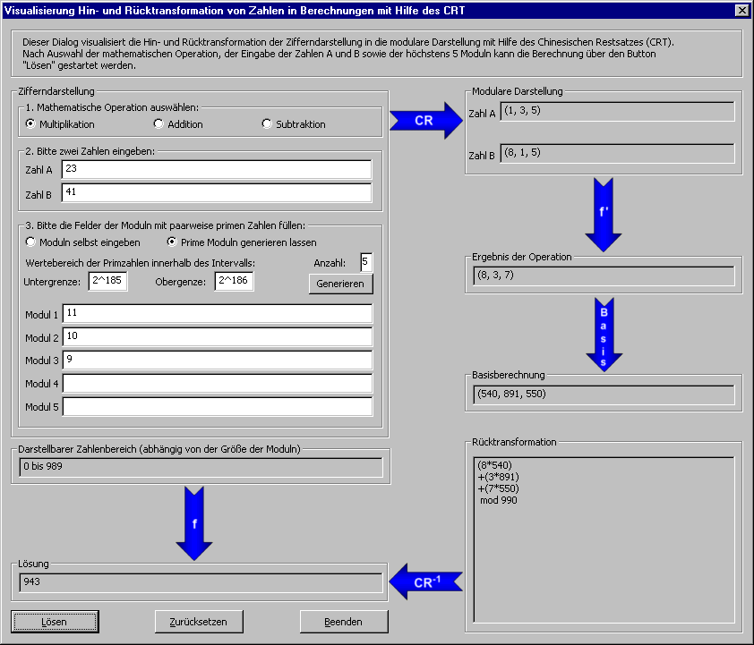

Dialog zur modularen Hin- und Rücktransformation
Dieses Dialogfenster erhält man über den Menüeintrag Einzelverfahren \ Anwendungen des Chinesischen Restsatzes \ Modulare Hin- und Rücktransformation.
Dieser Dialog gibt Ihnen die Möglichkeit, die auf dem Chinesischen Restsatz (CRT) beruhende Hin- und Rücktransformation der Zahlendarstellung in die modulare Darstellung nachzuvollziehen.
Der Benutzer kann als mathematische Operation per Radiobutton entweder eine Multiplikation, eine Addition oder eine Subtraktion von zwei Zahlen A und B auswählen. Initial ist die Multiplikation ausgewählt.
Wir betrachten nun ein einfaches Zahlenbeispiel, indem wir als Zahl A die 23 und als Zahl B die 41 eingeben.
Der Benutzer muss danach die Moduln m1 · m2 · … · m5 eingeben. Die Moduln legen fest, in welchem Wertebereich die Eingangszahlen und das Ergebnis liegen kann. Deshalb muss man ein Moduln groß genug wählen oder entsprechend mehrere Moduln auswählen, damit man auch große Zahlen richtig darstellen kann.
Die Moduln können vom Benutzer entweder automatisch erzeugt oder manuell in den Eingabefeldern der Moduln eingeben werden.
Sind die Moduln nicht paarweise teilerfremd, wird dies dem Benutzer nach einem Klick auf den Button Lösen wie in der folgenden Nachricht angezeigt, und der Benutzer muss ein neues Modul eingeben:

Überschreitet das Ergebnis einer mathematischen Operation den darstellbaren Zahlenbereich, wird der Benutzer über ein Nachrichtenfenster informiert:

Ein Beispiel wäre die Multiplikation von 23 und 41. Das Ergebnis 943 überschreitet den darstellbaren Zahlenbereich, wenn man lediglich die Moduln 11 und 10 auswählt [0, ..., 110-1].
Wenn das Ergebnis einer mathematischen Operation im negativen Zahlenbereich liegt, wird der Benutzer ebenfalls über ein Nachrichtenfenster informiert:

Ein Beispiel dafür wäre die Subtraktion von 23 und 41, da das Ergebnis -18 kleiner als 0 ist.
Wir wählen für unser Beispiel neben den zwei Zahlen A = 23 und B = 41 manuell drei paarweise teilerfremde Moduln aus:
m1 = 11, m2 = 10, m3 = 9.
Hiermit können wir als Ergebnis jede ganze Zahl x zwischen 0 und 989 (m1∙ m2∙ m3-1) darstellen.

Wir können nun nach Auswahl der mathematischen Operation, der Eingabe der Zahlen A und B sowie der Eingabe der Moduln auf den Button Lösen klicken, um die Visualisierung zu starten:

Der darstellbare Zahlenbereich wird in einem Ausgabefeld unter den Modulfeldern angezeigt.
Die Visualisierung läuft im Uhrzeigersinn und beginnt bei dem CR-Pfeil wie folgt:
1. Die Zahlendarstellung wird zuerst in die modulare Darstellung transformiert (CR-Pfeil)
Die Zahlen A = 23 und B = 41 werden auf ihr jeweiliges entsprechendes Resttripel abgebildet.
23 mod 11 = 1, 23 mod 10 = 3 und 23 mod 9 = 5 sowie
41 mod 11 = 8, 41 mod 10 = 1 und 41 mod 9 = 5.
Wir erhalten für die Zahl 23 das Tripel (1, 3, 5) und für die Zahl 41 (8, 1, 5), welche in der Gruppierung Modulare Darstellung angezeigt werden.
2. Die arithmetische Operation wird durchgeführt (f’ - Pfeil)
Danach werden die beiden Tripel direkt miteinander multipliziert
(1 ∙ 8) mod 11 = 8
(3 ∙ 1) mod 10 = 3
(5 ∙ 5) mod 9 = 7
und man erhält als Ergebnis das Tripel (8, 3, 7), welches in der Gruppierung Ergebnis der Operation angezeigt wird.
3. Die Basis wird berechnet (Basis - Pfeil)
Um das Ergebnis der Operation wieder in die Zifferndarstellung zurückzuführen, wird die Basisdarstellung ermittelt.
Hier ist M = 11 · 10 · 9 = 990, M1 = M/11 = 90, M2 = M/10 = 99, M3 = M/9 = 110.
Mit Hilfe des erweiterten Euklidischen Algorithmus berechnen wir die Inverse Mi mod mi [i = 1, 2, 3] und erhalten als Basis:
e1 = 6 ∙ 90 = 540
e2 = 9 ∙ 99 = 891
e3 = 5 ∙ 110 = 550
Die Basis (540, 891, 550) wird in der Gruppierung Basisberechnung angezeigt.
4. Das Ergebnis wird per Rücktransformation in die Zahlendarstellung überführt (CR-1 - Pfeil)
Durch die Bildung des Skalarprodukts des Ergebnisvektors mit dem Basisvektor lässt sich die Zahl x berechnen.
x = 8 ∙ 540 + 3 ∙ 891 + 7 ∙ 550 mod 990. Der Rechenweg ist im Ausgabefeld Rücktransformation dargestellt.
5. Das Ergebnis nach der konventionellen Stellenwertnotation (f - Pfeil)
Die Zahl x = 943 wird in der Gruppierung Lösung angezeigt.
Mit einem Klick auf den Button Zurücksetzen können Sie alle Felder löschen.
Mit einem Klick auf den Button Beenden verlässt man das Dialogfenster und kehrt zurück zum CrypTool-Hauptfenster.